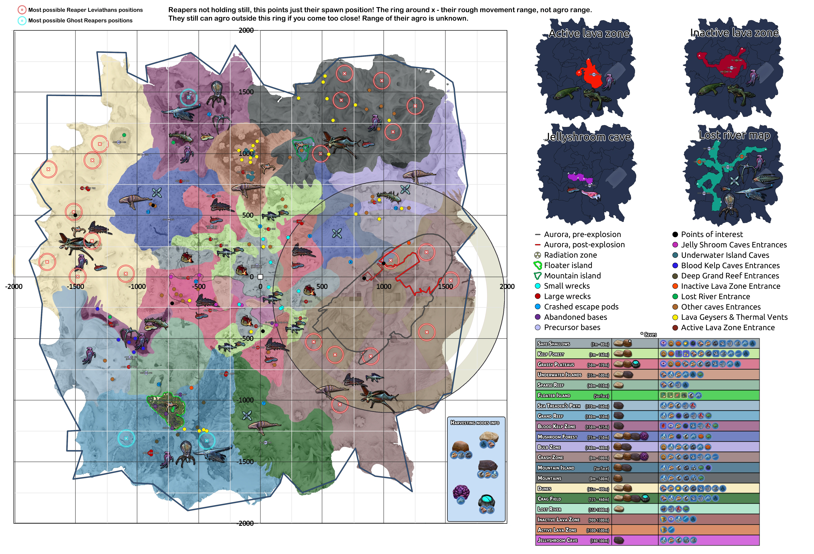

⌂
RETURN HOME
Subnautica Map
戰略地圖與群落對照
極光號 (爆炸前) Aurora (Pre)
興趣點 (Points of interest)
極光號 (爆炸後) Aurora (Post)
蛇蘑菇洞入口 (Jelly Shroom)
輻射區 (Radiation)
水下浮島洞穴 (Underwater Is.)
漂浮島 (Floater Island)
血油區洞穴入口 (Blood Kelp)
五指山 (Mountain Island)
深大暗礁入口 (Deep Grand Reef)
小型殘骸 (Small wrecks)
死火山入口 (Inactive Lava)
大型殘骸 (Large wrecks)
失落之河入口 (Lost River)
逃生艙 (Escape pods)
其他洞穴入口 (Other caves)
德加斯基地 (Abandoned bases)
熱能/岩漿噴口 (Vents)
外星遺跡 (Precursor bases)
活火山入口 (Active Lava)

SCROLL TO ZOOM • DRAG TO PAN
安全淺灘
Safe Shallows
海藻森林
Kelp Forest
紅草區 (草原)
Grassy Plateaus
水下浮島
Underwater Islands
稀疏暗礁
Sparse Reef
漂浮島 (陸地)
Floater Island
踏浪者之路
Sea Treader's Path
大暗礁
Grand Reef
血油區
Blood Kelp
蘑菇森林
Mushroom Forest
庫什區
Bulb Zone
墜毀區
Crash Zone
五指山 (山脈島)
Mountain Island
山脈區
Mountains
沙丘區
Dunes
碎骨區
Crag Field
失落之河
Lost River
死火山區
Inactive Lava
活火山區
Active Lava
蛇蘑菇洞
Jellyshroom Cave